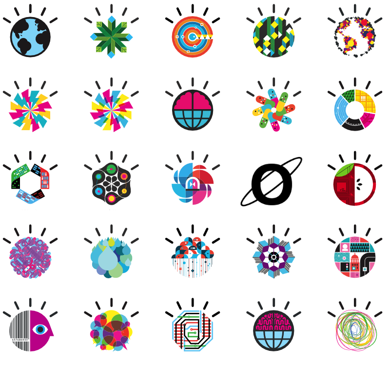

In this website, we present the FATS (Feature Analysis for Time Series) library. FATS is a Python library which facilitates and standardizes feature extraction for time series data. In particular, we focus on one application: feature extraction for astronomical light curve data, although the library is generalizable for other uses. We detail the methods and features implemented for light curve analysis, and present examples for its usage.